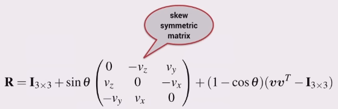

The y-axis is 90 degrees in an anti-clockwise direction from the x-axis.
It may not be enough to describe an objects position by just x and y coordinates, it is desirable to also have orientation. Can do this by attaching a coordinate frame to the object. Now the objects orientation is described by the orientation of the attached coordinate frame with respect to the reference (world) coordinate frame.
Can describe the motion of an object in two steps:
It is convention that the x-axis is in the direction of normal motion for the machine.
May be represented with this symbol, pronounced ksi,
\[\xi\]
where \(\xi\) is
\[(x,y,\theta)\]
\(^{A}p_B\) where p is the vector to point B with respect to (from) A.
\(^{A}\xi_B\) where \(\xi\) is the pose of B with respect to A.
Use pose to describe a coordinate frame with respect to another coordinate frame. Use a vector to describe a point with respect to a coordinate frame.
We can’t add poses and vectors.
If you have a pose \(^{W}\xi_C\) and a vector \(^{C}p_d\), then to find \(^{W}p_d\) you must transform the vector from one frame to another like
\[^Wp_d = ^W\xi_C \cdot ^Cp_d\]
Relative poses can be compounded or composed i.e. they can be ‘added’.
We use the symbol \(\oplus\) for this, e.g.
\[^A\xi_C = ^A\xi_B \oplus ^B\xi_C\]
You can use a pose graph to better display and easily compute the relationships between the all of the poses. A pose graph is a directed graph, with solid edges between coordinate frames (nodes) indicating that the pose is known, and a dotted line indicating that the pose is unknown but perhaps it may be computed.
You can define an unknown pose with a composition of the known poses.
If when finding a pose it is necessary to travel backwards (in the reverse direction) in the graph, that may be represented using the symbol \(\ominus\).
\[^X\xi_Y \oplus ^Y\xi_Z = ^X\xi_Z\]
\[^Xp = ^X\xi_Y \cdot ^Yp\]
\[\xi_1 \oplus \xi_2 \neq \xi_2 \oplus \xi_1\]
\[\ominus ^X\xi_Y = ^Y\xi_X\]
\[\begin{aligned} \xi \ominus \xi &= 0 & \ominus \xi \oplus \xi &= 0 \\ \xi \ominus 0 &= \xi & \xi \oplus 0 &= \xi \end{aligned}\]
Here \(^Ap\) and \(^Bp\) share an origin and so are the same. Equating these two gives

which can be written in matrix form like

which can be more concisely written as
\[^A\boldsymbol{p} = \mathbf{R} ^B\boldsymbol{p} \qquad\text{ where } \mathbf{R} = \begin{pmatrix} \cos{\theta} & -\sin{\theta} \\ \sin{\theta} & \cos{\theta} \end{pmatrix}\]
but write it using the notation
\[^A\boldsymbol{p} =\ ^A\mathbf{R}_B \ ^B\boldsymbol{p} \qquad\text{ where } ^A\mathbf{R}_B = \begin{pmatrix} \cos{\theta} & -\sin{\theta} \\ \sin{\theta} & \cos{\theta} \end{pmatrix}\]
So R is a rotation matrix that
To rotate a vector from frame {A} to frame {B} we use the inverse rotation matrix, which for a rotation matrix is simply the transpose.
Also note the equivalence
\[^B\boldsymbol{R}_A =\ ^A\boldsymbol{R}^{-1}_B\]

t is for translation.
I think a 3x3 matrix is preferred in the last step because then you can take the inverse (the zeros and ones in that last row are constant).


Remember the order when transforming:

Pose is a matrix \(^A\xi_B \sim\ ^A\boldsymbol{T}_B\)
Compounding (composition) (\(\oplus\)) is a matrix-matrix product.
Negation (\(\ominus\)) is a matrix inverse.
Vector transformation (\(\cdot\)) is a matrix-vector product.
\[\xi\cdot p \rightarrow \boldsymbol{T} \widetilde{p}\]
The pose notation using \(\xi\) is exactly the same as in 2D, and the same rules apply.
The difference is in the implementation.
Frames {A} and {B} share the same origin.
For rotation about either the x, y or z axis.
Multiplying these in various combinations will achieve much more complicated rotations.
The order in each rotations are applied in 3D is critically important; they are non commutative.
(Paraphrased)
Any rotation can be expressed by a sequence of rotations (not more than three), where no two successive rotations are about the same axis.
These are the set of rotations where there are two rotations about the same axis (but not sequentially).
XYX, XZX, YXY, YZY, ZXZ, ZYZ
ZYZ is commonly referred to as ‘Euler angles’, but mind it is only one of the six possible.
Euler angles are not unique a representation of orientation in space.
Rotate on new axis.
For the Euler angle approach, the order of the matrix multiplication and transformations are the same as the order they occur.
These are the remaining sets of rotation sequences which satisfy Euler’s rotation theorem. All rotations are about different axes.
They are
XYZ, XZY, YXZ, YZX, ZXY, ZYX
XYZ and ZYX are both commonly referred to as roll pitch yaw angles. Which one is referred to depends on the context. XYZ seems to be the default for Robotics M course.
Rotate on original axis.
For fixed angle approach: the order of transformations (including translation) should be all reversed. Say a frame {B} is located as follows: initially coincident with a frame {A}, we perform a rotation about ZA axis, followed a rotation about YA axis, followed by a translation along [XA, YA, ZA].
Then the transformation matrix (4X4) is: Trans[XA, YA, ZA].Rot(YA).Rot(ZA)
Also known as Gimbal lock.
A Gimbal is a mechanism used to stabilise some device to space.

Gimbal lock is when two of the axis become aligned.
For roll-pitch-yaw angles, Gimbal lock occurs when pitch is at \(\pi/2\). Results in rotation axes of the first and third rotations (roll and yaw) parallel.
For example, the set of roll-pitch-yaw angles (30, 90, -20)° is equivalent to the set (0, 90, 10)°. A pitch of 90° results in Gimbal lock, whereby the roll and yaw axes become aligned, and thus rotations about these axes can be summed and by convention assigned to the yaw angle.
To minimise Gimbal lock, choose coordinate conventions so that the pitch angle is around 0 for normal operating conditions.
Describes the orientation of the end effector.


All three columns of the rotation matrix are orthogonal, hence one of the vectors can be computed from the other two.

The orientation of a body in 3D can also be described by a single rotation about a particular axis in space.
Need to know the axis of rotation vector \(\boldsymbol{v}\), and the angle of rotation about the vector \(\boldsymbol{\theta}\).
We observe that the axis around which the rotation occurs must be unchanged by the rotation, therefore the rotation axis must be an eigenvector of \(\boldsymbol{R}\).
A rotation matrix has three eigenvectors:
If you know \(\theta\) and the eigenvector, then the rotation matrix can be found using the Rodrigues equation.

Pose has
It can be represented by

Using the rotation matrix avoids singularity’s, unlike the Euler and fixed angle approaches.
The derived inverse kinematic function has two solutions
Determine the transformation matrix for the end-effector and pick out the translation parts. Now you have equations for x=… and y=… so then solve for the angles.
A 6-link industrial robot such as the Puma 560 has eight different arm configurations.
The arm can be in either a left-handed or right-handed configuration, 2 possible configurations. In addition the elbow can be either above or below the shoulder, another 2 possible configurations. Finally the gripper can be at a particular angle about the gripper axis, or the same angle plus 180 degrees — for a common two-fingered or parallel jaw gripper it makes no difference. This is another 2 possible configurations. In total there are 2x2x2 possible configurations, a total of 8.
A configuration change is a motion that starts and ends with the same end-effector configuration.
Used for switching from left-handed configuration to right-handed, and vice versa.
Many 6-DOF robots have a spherical wrist. This is where all 3 wrist joint axes intersect at a single point.
The analytic solution may be too hard to compute or not exist.
Initial conditions will determine the configuration of the end pose, trial and error may be needed, i.e. can’t guarantee a particular configuration.
Can be computationally expensive (iterative algorithm).
Numerical inverse kinematics works well for redundant robots.
Robot may not be able to reach the requested pose
Related to the Gimbal lock problem.
If particular axes are aligned, can loose a degree of freedom, affecting the robots ability to reach some positions.
Very high DOF robot.
Use a numerical approach to solve for joint angles.
How to smoothly move from one pose to another.
Simple approach.
No constraints on the path except for the start and end points
Determine the pose at each intermediate point
Results in straight line motion in 3D space.
Still, there is little difference between Cartesian interpolated motion and joint books interpolated motion.
If the joints move at this particular joint velocity, what is the velocity of the end-effector?
Rate of change of a pose.
Find the expression for x and y (as a function of the joint angles) just like in when finding the inverse kinematics.
Make the joint angles functions of time
Take the derivative of x and y
Factor out the \(\dot{q_1}\) and \(\dot{q_2}\) so the equation is in matrix form
This can be written as \(v = \mathbf{J}(q)\dot{q}\)
\(v\) is the tip velocity
\(\mathbf{J}(q)\) is the Jacobian matrix
The Jacobian is the matrix equivalent of the derivative.

Here the Jacobian is a function of the joint angles and the kinematic parameters of the robot.
Greek letter nu, \(nu\)
Given the end-effector velocity, what are the joint velocities?
\(\dot{q} = \mathbf{J}(q)^{-1}v\)
The Jacobian can only be inverted if it is
square: the robot’s task and configuration spaces are equal, and
non-singular: the robot’s joint coordinates avoid certain “singular” configurations.
A singular Jacobian matrix indicates that the end-effector motion is unable to move in or rotate about a particular Cartesian direction. (loss of a DOF)
A pose may be nearly singular, making movement in some directions difficult.
Can be determined by the Jacobian determinant or the Jacobian condition number.
A small determinant corresponds to a large condition number, that is, the matrix is nearly singular.